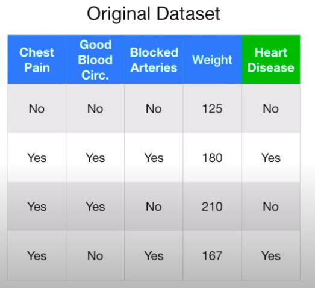
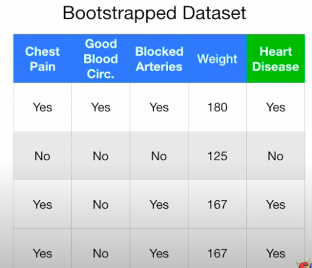
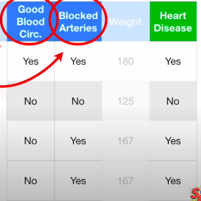
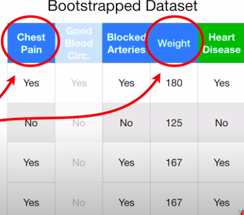

§ MALIS: Random Forests
The issue with Decision Trees is that they are not flexible to achieve high accuracy. So, we use Random Forests, which alleviate this problem by creating multiple trees from different starting points. The steps are as follows:
- Create a Bootstrapped Dataset of the same size by selecting random samples with replacement


- Create a Decision tree by selecting questions at random from this bootstrapped dataset, and use the impurtiy function to segregate the metric to used

- Wherever a question needs to be asked, select the new metric randomly out of the metrics except the one used i.e in this case Good blood Circulation

- Go back to step 1 and repeat to create a new bootstrapped dataset and repeat everything to create another tree → Do this process a fixed number of times.
Thus, by creating a variety of trees → A forest → We are able to get trees with different performances that can predict the labels. For new data items, run it down all the trees and keep a track of the classification - Yes and No - and then choose the classification with the bigger number →
Bagging = Bootstrapping + Aggregating. Thus, Bagging is an ensemble technique where we train multiple classifiers on subsets of our training data and then combine them to create a better classifier.
§ Evaluating RF
the entries that didn't' end up in the bootstrap dataset - Out of bag Data - are run through the tree to get the classification from all the trees and again use Bagging to see what the final classification is → For all out of bag samples, we evaluate the confusion matrix and calculate the precision, accuracy, sensitivity, and specificity
§ Hyperparameters in RF
The hyperparameters in the RF are :
- m → The number of variables we are using out of the subset in bootstrap to create the tree
- k → the number of trees we have in the forest
We can do the Out-of-Bag stuff on different random forests and select the one with the best accuracy